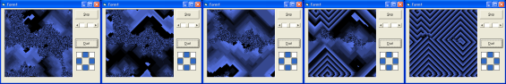

Cellular Automata Algorithm Demonstration (33K)
Cellular Automata Algorithm Demonstration (33K)
 23 Aug 2003
23 Aug 2003
First Posted

Cellular Automata - Crystal Model
Creating real-time animation effects using two-dimensional cellular automata
A cellular automata are a class of mathematical systems which have been used widely in the investigation of complexity. An automaton is simple: an array of neighbouring cells each have a finite number of possible states. Each cell is then set to change its state when an imaginary clock ticks according to a set of rules which relate the new state to that of its neighbouring cells. Even with very simple rules, surprisingly complicated results bloom during their iteration.
Cellular Automata Algorithm
To perform the algorithm, first a cellular space is needed. The cellular space is a grid of width x height cells. In order to make the space "infinite" the edges of the grid are assumed to wrap-around onto each other, so cells on the extreme right margin are considered to be adjacent to those on the left, and cells at the bottom are adjacent to those at the top. Each cell in the space is given a state number, s. The state number can vary between 0 and the maximum state number, maxStates - 1.
The cellular automata is then performed by running this rule for each cell:
- Get the state s for the current cell.
- For each neighbour of the cell:
- Get the neighbour cell state ns. If the neighbour's state is s - 1, then convert the neighbour to state s. This is known as "eating" the neighbour. State values wrap-around, so a cell at state 0 eats cells with state maxStates - 1
Which neighbour cells are considered can be varied to modify the result of the algorithm. The standard neighbouring cells are the four immediately above, below, to the left and to the right, however, the neighbours diagonally (or even further out) can also be considered. Note that since the algorithm considers neighbours in all directions, the result needs to be populated into a new copy of the space to avoid changing neighbours in the previous version before the algorithm has completed.
To see the algorithm in effect, the space is initially populated with random data. When it runs, three phases of activity occur. In the first, droplets appear and start getting gradually bigger. Then the droplets start taking on a hazy structure and continue to enlarge until they begin to meet each other. Finally, spirals appear and then rapidly take over the entire cellular space, settling into a stable pattern.
To obtain a continuously changing pattern after stability has set in, the image can either by dusted periodically with random data or the rules determining which cell is a neighbour can be changed. The result of dusting with random data depends on the intensity of the random data added. At low intensities, spirals can subdivide or change shape. At higher intensities, the entire pattern can be reseeded. Changing the rules setting which cells are neighbours has kaliedoscopic effects on the result. For example, try toggling all left and/or all right neighbours.
Animating an Automata
Calculating the automata's rules for a single cycle can easily be achieved quickly enough for animation in Visual Basic. However, getting the result onto the screen quickly enough to provide a smooth animation is a different matter.
The Windows DIB Section object is a bitmap in which the memory to hold the bitmap is provided by the application which owns it. By using the same memory to perform the automata calculations as displaying them on screen, an animation of reasonable size can be shown in realtime. In this sample, I've chosen a 256 colour DIB Section as the basis for the algorithm, since each pixel within the image is one byte long, which means the DIB section data is effectively a 2 dimensional byte array, and a byte can store all the possible states for a pixel.
Bringing It Together
The cCellularAutomata implements this algorithm. Properties are provided for setting the number of states, size of the cellular space and which neighbours should be considered when running the algorithm (specified using an x and y offset from the cell). The colours of the result can also be specified through light and dark colour properties. These are used to create a palette by linearly interpolation for each of the states.